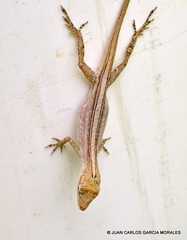

Una especie de tamaño mediano (SVL en el espécimen más grande 50.0 mm) del género Anolis (sensu Poe, 2004) que se diferencia de todas las especies centroamericanas de este género excepto A. wellbornae y la nueva especie aquí descrita por la siguiente combinación de caracteres: papada masculina de color naranja amarillento con una gran mancha de azul a púrpura; patas cortas (el dedo más largo de la extremidad posterior adprimida llega a un punto entre el hombro y el tímpano, rara vez más allá del tímpano); tímpano muy pequeño (menos de un cuarto del tamaño de la placa interparietal); superciliar anterior notablemente grande y alargado; y escamas ventrales fuertemente aquilladas y mucronizadas. Anolis sericeus se diferencia de A. wellbornae por tener una papada masculina menor de 50 mm2 (mayor de 100 mm2 en el macho A. wellbornae) y una papada femenina de aproximadamente el mismo tamaño que la papada masculina (sin papada en las hembras de A. wellbornae). Además, el hemipene de A. sericeus no tiene una cresta asulcada (tal cresta presente en A. wellbornae). Para conocer las diferencias entre A. sericeus y la nueva especie descrita aquí, consulte la sección Diagnóstico de la nueva especie [de KÖHLER y VESELY 2010].
Caracteristicas